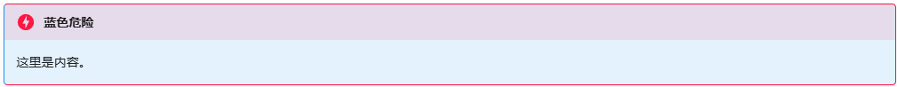

提示块语法 !!!（Admonition in MkDocs/Markdown）¶
!!! 语法用于创建各种类型的提示块（admonition），可突出关键信息、注意事项、警告、补充示例等。
在 MkDocs Material 中由 pymdown-extensions 提供支持，功能丰富、类型多样。
读法
英语：admonition /ədˈmɒnɪʃən/
日语：アドモニション、または「エクスクラメーションマーク」
用途
- 用于文档中对内容进行分类提示，突出关键信息、注意、警告、代码范例、引用、答疑等。
- 语法结构灵活，支持自定义标题、嵌套 Markdown、自动配色风格。
- 指令块高亮自动美化，易于一眼分辨不同类型提示。
基本语法
!!! 类型 "标题"
内容（需缩进）
!!!：三感叹号，提示块起始标记类型：note、info、tip、warning、danger、example、question 等（决定配色与风格）"标题"：选填，建议补充简明题目- 内容：可以为多行，每行需统一缩进（推荐 4 个空格）
常见类型与效果
| 类型 | 示例语法 |
|---|---|
| note | !!! note "说明" |
| info | !!! info "说明" |
| tip | !!! tip "说明" |
| warning | !!! warning "说明" |
| danger | !!! danger "说明" |
| example | !!! example "说明" |
| question | !!! question "说明" |
点击展开显示所有类型的提示块效果
提示
用于普通信息和补充说明。
信息块
用于突出中性、事实类说明。
技巧
用于建议、窍门、推荐操作。
警告
用于重要注意事项及可能风险。
危险
用于严重警告、不可忽视的内容。
代码示例
print("hello, world!")
常见问题
这里用于展示FAQ、提问解答场景。
扩展
自定义样式
通过扩展 CSS 可自定义提示块的配色与图标，适用于文档品牌包装。
新建或编辑 extra.css，比如：
/* 假设给 danger 再自定义一个蓝色主题 */
.md-typeset .admonition.danger, /* 普通（非折叠）danger 提示块，应用自定义样式 */
.md-typeset details.danger { /* 可折叠（??? danger）提示块也应用此样式 */
border-left-color: #2196f3; /* 左侧竖线颜色设置为蓝色（默认是红色） */
background-color: #e3f2fd; /* 整体背景色调整为淡蓝色（默认偏粉或红） */
}
!!! danger "蓝色危险"
这里是内容。
在 mkdocs.yml 里引入这个 CSS。

嵌套块演示
内层 info
可以将提示块嵌套，实现不同类型组合提醒。
支持所有 Markdown 内容
- 列表
- 代码块
print("hello, world!") - 图片
注意事项
!!!语法属于 pymdown-extensions 扩展，并非标准 Markdown 原生语法- 只有在 MkDocs Material、Typora（含部分增强插件）、JupyterLab（开启扩展）等环境下会显示为彩色提示块，GitHub/Gitee/普通 Markdown 只显示为普通文本
- 内容必须整体缩进，否则无法正确渲染
小贴士
善用不同类型的提示块，可以显著提升文档可读性和专业度，帮助用户聚焦关键信息，减少遗漏！